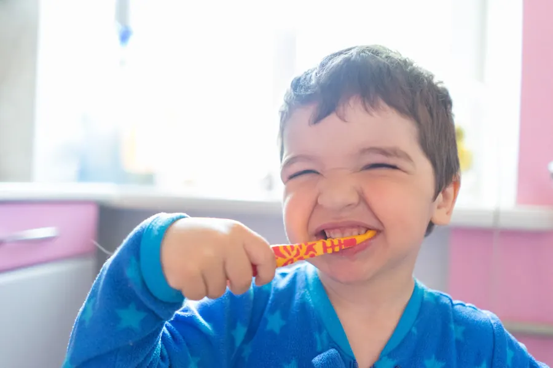
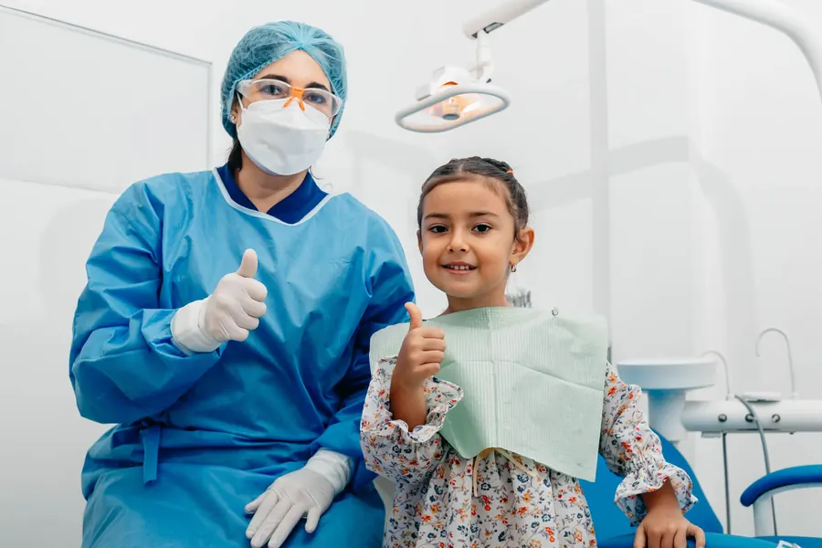
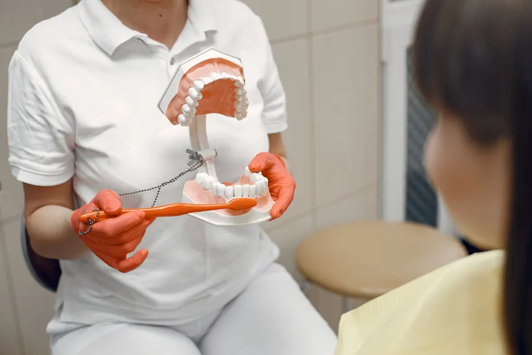
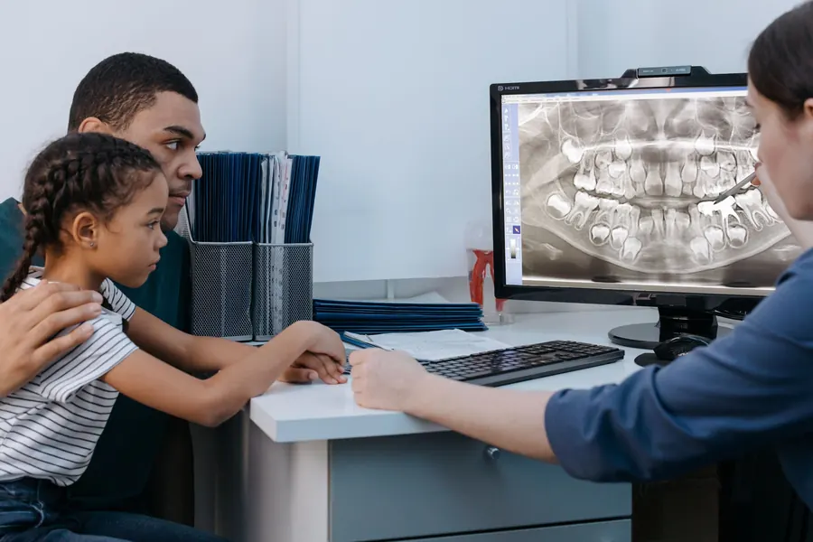
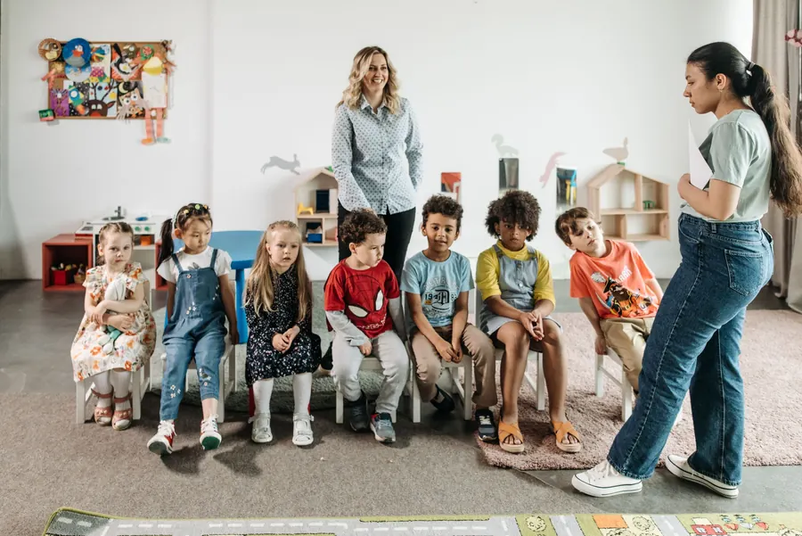

Diş hekimine ilk gün, güzel bir gün olsun.
Çocuk diş hekimliği (pedodonti) uzmanı Dt. Selin Bilgin Özdemir, Dt. Oğuzhan Özdemir ile birlikte. Çocuğunuzun yaşına göre rehberi okuyun, randevu notunuzu WhatsApp'tan tek dokunuşla gönderin.
Çocuğunuz kaç yaşında?
Veliler en çok "ne zaman götürmeliyim, evde neye dikkat etmeliyim" diye soruyor. Yaşı seçin, kısa cevaplar değişsin.

Genel bilgilendirmedir; her çocuğun ağız yapısı farklıdır, değerlendirme muayenede yapılır. Metinleri yayından önce siz onaylarsınız.
Koltuğa oturmadan önce tanışma.
Veli, randevudan önce ne olacağını bilirse çocuğuna da anlatabilir. Yayında bu üç kare kendi kliniğinizin fotoğrafı olur.

01Tanışma
Çocuk koltuğu, ışığı ve aletleri önce görür; acele edilmez.

02Muayene
Dişler sayılır, gerekirse röntgen istenir; bulgular veliye anlatılır.

03Plan
Evde yapılacaklar ve bir sonraki kontrol birlikte konuşulur.
Süt dişinden daimi dişe.
Başlıklar Doktortakvimi profilinizden alındı; açıklamalar genel bilgidir.
Sağlık tanıtım kurallarına uygun olarak sayfada fiyat, kampanya, hasta yorumu ya da öncesi-sonrası görsel yer almaz.
Seçin, mesaj yazılsın.
Yaşı, konuyu ve size uygun zamanı seçin; WhatsApp mesajı hazır açılır. Klinik uygun gün ve saati size yazar.

Miniklerle kliniğe ziyaret.
Paylaşımlarınızda anaokulu öğrencilerinin kliniği ziyaret ettiği günler var. Kreş ve okul yöneticileri ziyaret talebini buradan doğrudan size iletir.
Klinikten kareler.
Denipol Hastanesi'nin hemen arkası.
- Adres
- 29 Ekim Bulvarı, 424 Sk. No:62/C, Merkezefendi / Denizli
- Telefon / WhatsApp
- 0538 418 22 71
- @uzm.dt.selinbilginozdemir
- Çalışma saatleri
- Sizden alınıp eklenecek